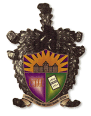
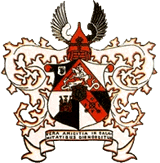

Citas korporācijas
Pie Lettgallias komānus ir garantējušas divas korporācijas:

|
|

|
Fraternitas Metropolitana
Krāsas: zelts, violēts, zaļš
Devīzes: Vienotiem spēkiem par godu, draugu, tēvzemi
|
|
Ruthenia
Krāsas: melns, oranžs, balts
Devīzes: Vera amicitia in calamitatibus dignoscitur
|
Lettgalliai pastāv draudzības karteļa līgums ar igauņu korporāciju Rotalia:

|
Rotalia
Krāsas: zils, melns, zaļš
Devīzes: Ausus, kindlus, iseteadvus, uhistunne - goda prāts, noteiktība, pašapziņa, kopība.
|
|
|
VĒL PAR STUD. KORPORĀCIJĀM:
|
|